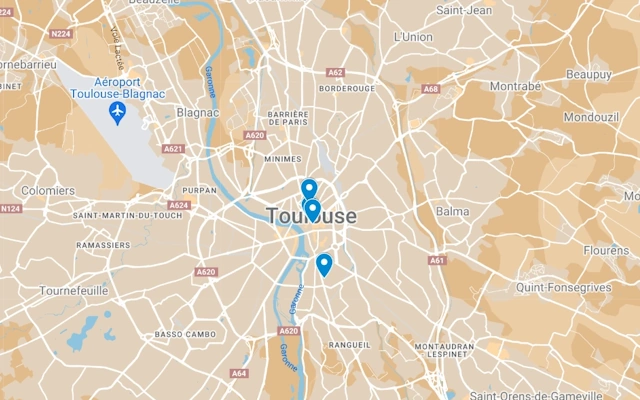

Diagnostics territoriaux, témoignages et autres, retrouver ici toutes nos publications !


Implantée au plein cœur du Parc de la ZAC Andromède, la grange de « Barricou » offre un contraste étonnant avec l'urbanisation du quartier qui ne cesse de se développer depuis les dernières années.
Pour agir efficacement, il est indispensable de disposer d’un outil d’évaluation rigoureux tout en restant accessible au grand public. Voici une méthodologie que nous avons développé afin de pouvoir diagnostiquer efficacement la dégradation du ce Patrimoine.
Ce projet a pour mission de mettre en lumière ces lieux en péril, de sensibiliser le public à leur importance et d'encourager les actions concrètes pour leur préservation.
N'hésitez pas à faire un tour sur cette carte interactive, vous pourrez y trouver les diagnostics patrimoniaux passés ainsi que ceux encore en cours !
Retrouvez ici tous les diagnostics patrimoniaux !
Retrouvez ici tous les témoignages recueillis par nos soins jusqu'à présent !
Vous avez connaissance d'un batiment en déperdition, vous travaillez dans le domaine de la réhabilitation, ou vous souhaiteriez simplement nous contacter ?
Si vous avez répondu "Oui" à l'une de ces questions, alors qu'attendez-vous pour remplir ce questionnaire ?